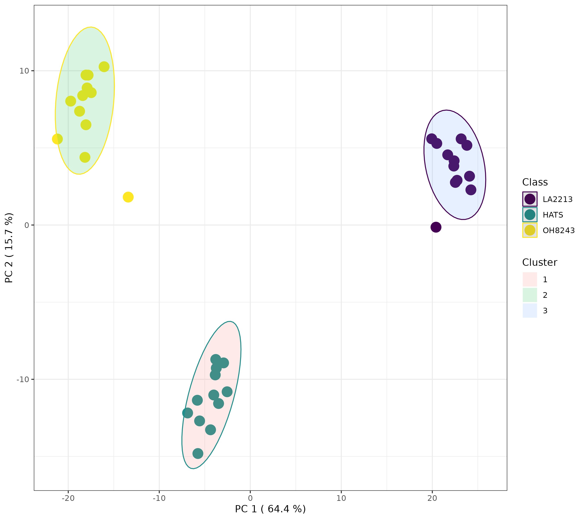
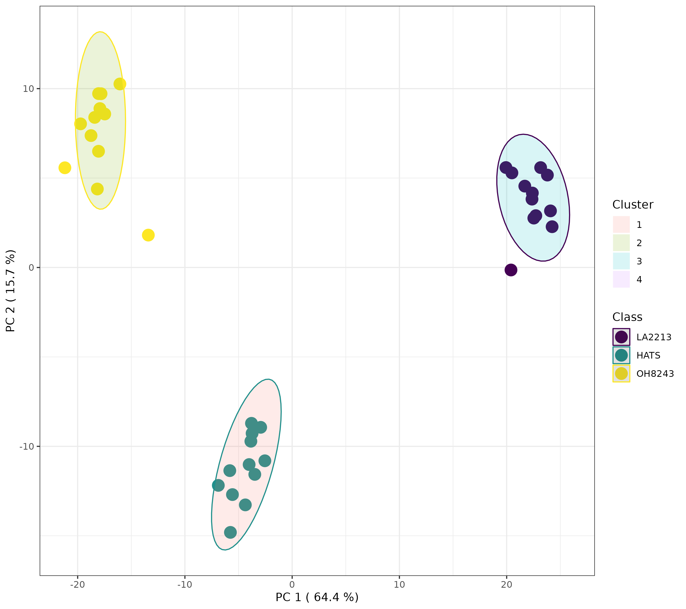
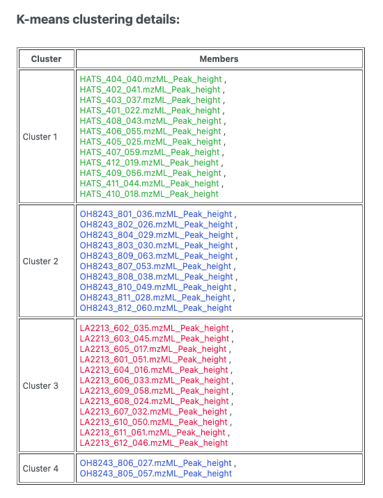

Data analysis with MetaboAnalyst
1 Introduction
Now that we have a filtered, final feature table, we can get started on our data analysis, including understanding if our data is of good quality before we begin to make biological interpretations as to what our results mean. We are going to conduct this analysis using MetaboAnalyst which is at version 6.0 when I put together this tutorial. You can read more about MetaboAnalyist on their website or in their publications (Ewald et al. 2024).
1.1 Data formatting
Before we upload our data, let’s make sure its in a suitable format. If we go to the Data Formats link on the left side of the website, we can see example data sets which will help us format our data. Our data looks like this right out of MZmine:
We will start with doing statistics (one factor) and we have a peak intensity table, so the file called lcms_table.csv is a good one for us to look at.
In this data, we have features in rows and samples in columns. There is also a header row which contains the unique sample names, and a second row called Label which contains the groups. We will need to adjust our data to look like this. This includes
- Adding a row called Label which contains the sample groups (here, QC, HATS, LA2213, or OH8243).

- Creating a single column with the mz_rt as a unique identifier. We can do this with the function
=CONCATENATE()in Excel. Then we can fill down the row. Then be sure to copy this column andPaste>Paste special>Valuessince when we later remove some of the other columns that are inputs to this one, the formulas will break.

- Now we can remove row ID, row m/z and row retention time.
Our data should now look like this:

2 Import into MetaboAnalyst
Remember that when you are using MetaboAnalyst through the web browser that it will eventually time out, so starting an analysis, and walking away for a period of time is not a good idea. Make sure you keep good notes on what you do during your analysis.
Navigate to https://www.metaboanalyst.ca/ and click on the red “Click here to start button”.

We have already processed out spectra so we are going to click on Statistical Analysis (one factor).
Now we want to upload our data. We have our file saved as a .csv and our data is as peak intensities. In our case, samples are in columns and data is unpaired. Once we have done this, we can press submit just to the right of our input.
3 Data processing
3.1 Data check
Once the data has been imported, we can first look at the data integrity check.

We see that:
- Samples are in columns and features in rows
- Our data is in
.csvformat - We have 42 samples and 2514 peaks - this is what we would expect
- Samples are not paired - this is what we would expect
- 3 groups were dtected - I might expect 4 groups - OH8243, LA2213, HATS, and QCs. If we click the “Edit Groups” button we can see that the Label for each of our groups has inherited correctly, but that it seems like QC isn’t being counted as a group.
- A total of 0 (0%) missing values were detected - this makes sense as data that is missing here is coded as zero.
If we agree with this, we can click Proceed. MetaboAnalyst will bring you directly to the Data filtering step, but we can go back one to see how missing values are handled.
3.2 Missing values
Here you can tell MetaboAnalyst what you want done with missing values. Here we don’t have any (our missing values are coded as zero), but if you did you could indicate:
- Whether you want to remove features that have a lot of missing values
- What you want to do to estimate the remaining missing values.
3.3 Data filters
In this step, we can filter variables based on different rules. These include:
- Features that are very variable in the QCs. We don’t need to do this because we already did it manually.
- Features that are near constant across the conditions (i.e., those that have very low standard deviations)
- Features that are very low
I prefer to do this kind of filtering outside of MetaboAnalyst - you could do this in Excel if you wanted to. Here, we are not going to do any more filtering. We can just click Proceed (and skip this filtering).
4 Normalization
We can normalize our samples in different ways. MetaboAnalyst gives is 3 categories of transformation types:
- Sample normalization for general adjustment for systemic differences across samples. Here would could adjust by weight, by a reference features, or by total signal.
- Data transformation including by log (base 10), square root, or cubed room
- Data scaling
You can pick a normalization and view the result. This is nice because you can see what your normalization will do before picking the most appropriate one.
For example, I am going to try just log10 transforming my samples. When I do this, I can look at the result from both a feature and sample view.


I can contrast this with a log10 transformation and then Pareto scaling.
I think these look pretty similar and I think it would be ok to use either transformation. I am going to continue the rest of the analysis with just the log10 transformed data.
5 Statistics
Now that our data is set, we can use different analysis methods to understand our data quality, and differences among sample groups. Remember, there are analyses we want to do both with and without the QCs. I like to see a PCA that includes the QCs, but then I’d remove them and retain our three tomato groups for further analysis.
Let’s look with our QCs at the PCA first, and then we will remove those samples.
5.1 PCA with our QCs
When we look at the PCA tab, we can see:
- An overview - which includes PCA scores plot for each combination of PCs 1 through 5. The most conventional one to look at would be PC1 vs PC2.
- A scree plot - this shows us how much variation is explained by each of the PCs
- A 2D scores plot - this shows us each sample’s new coordinates in a reduced dimensionality space. We can indicate what PC should be on which axis (though again it’s hard for me to think of a reason to do something different from PC1 on x and PC2 on y)
- A loadings plot - this shows us how the variables (here, features) are weighted in contributing to each PC
- 3D plots - I find these to be terrible and never use them
- A biplot - combines the scores and the loadings, and can get very overplotted for MS metabolomics data.
Let’s look at each plot, talk about what it shows us, and try to interpret the data in the context of this particular experiment.
In the PCA overview, we can see a big chunk of variation (63%) is explained on PC1. We also see that our groups are really clearly separated when viewing PC1 vs. PC2.

When looking at the scree plot, we again see a large percentage of variation explained by PC1, and less variation explained by each subsequent PC. This is going to always be the case - PC2 always explains more variation than PC3, and PC3 more than PC4. But we can interpret this to be that drawing two PCs explains 78.4% of the metabolic variation in our dataset, and that adding additional PCs doesn’t explain all that much additional variation.

When we think of PCAs, what we are typically thinking of is a scores plot. In this one, we see a few important things:
- Our QCs are clustering very closely together - this is a good piece of data to convince both ourselves and our readers that our data is of high quality. We are able to measure the same thing very reproducibly.
- PC1 mostly separates LA2213 (the wild tomato) from OH8243 and HATS (the cultivated tomatoes).
- PC2 mostly separates OH8243 (the commercial parent) from HATS (the tomato that has been introgressed for the trait of high steroidal alkaloids).
- Overall, HATS and OH8243 are more similar than either of those two are to LA2213.
You can adjust in MetaboAnalyst how this plot looks. I tend to turn sample names and confidence intervals off because I think they crowd the plot. You can click on the little paint palette to be able to specify how your plot looks (change colors and shapes) and download a high quality image.
I would always put a figure like this in the supplementary materials of my papers so readers can get confidence that our data is worth spending time interpreting.
The loadings plot helps us to interpret that is driving separation on PC1 and PC2. Interpreting this alongside our scores plot, in this case, points on the far right of the plot should be higher in LA2213 and points on the far left should be higher oh OH8243 and HATS. Points that are close to the top of the plot should be higher in HATS and those towards the bottom higher in OH8243 or LA2213.
For example, if we click on the right most point on the loadings plot, we can see that this represents the feature with the identifier 578.5296_5.0895. We can select a boxplot and see the relative intensity of this feature across our sample groups.
Similarly, the point with the highest value on the y axis 474.3578_6.5878 is highest in HATS and lower in the other tomatoes.
You can also download the raw data for your loadings. This might be helpful to see which features have the highest and lowest values on loadings 1 and 2. You can also view boxplots of the feature abundances in this same view and sort your loadings.
5.2 PCA without QCs
That that we can see that our QCs are tightly clustering together, we can save that PCA scores plot and remove our QC samples. We can do that by navigating to Processing > Data editor in the left part of the browser.
Don’t forget to re-normalize.
This dataset (without the QCs) is what I would use for the rest of this analysis.
Here is a PCA that could be used as a figure in a paper.
We see the message of this PCA looks basically the same as when we had our QCs. But, we wouldn’t want to progress to univariate or multivariate statistics including our QCs as a group, since it is not an experimental group per se. I’m not going to go through all the plots again since we just did that with the QCs and the message is not changing.
5.3 ANOVA
We might be interested to see which features are significantly different across the 3 tomato groups, and we can assess that using ANOVA. We can set what our FDR cut-off should be, and I am going to be a little bit more stringent here and set this to 0.01.
In this case, this step isn’t that helpful since 2168 out of 2514 features are significantly different between at least two of our tomato groups. That doesn’t help us narrow down much of anything.
5.4 Dendrogram (i.e., hierarchical clustering)
Hierarchical clustering is a nice unsupervised way to see how the metabolomic profile of your samples compare. Many people when talking about their PCA scores plot refer to “natural clusters” in their data. The problem with this is that PCA is not a clustering algorithm. If you want to show heuristically natural clusters in your data, hierarchical clustering can help
Here we can see a dendrogram (like a phylogenetic tree) which clusters samples based on a distance metric and clustering algorithm. Samples that are more similar should be close to one another, and the longer the distance is on the x-axis, the less similar samples are.
In this particular case, we can see 3 clusters derived of our 3 tomato groups. We can also see that HATS and OH8243 are more closely clustered compared to LA2213. This is consistent with what we see in our PCA.
5.5 K-means (a different type of clustering)
K-means is another unsupervised clustering technique that has a similarly interpreted output to HCA but with different underlying assumptions and math. Here, we have to provide how much clusters we have (you can learn more about how to figure this out here. I am going to pick 3 because we have 3 tomato groups, and want to know if our samples will segregate based on group identity across 3 clusters.

Here, we can see that when we indicate 3 clusters, the tomato groups separate perfectly. This gives us some additional support that we have 3 distinct clusters in our data, and those are our tomato groups.
Alternatively, if we look for 2 or 4 clusters, we will see something different.

This looks to me actually like 3 clusters, but it’s not. If we click the spreadsheet beside the artists palette, we can see which samples belong to which cluster.

5.6 Heatmaps
A heatmap is a nice way to look at lots of data at once. It doesn’t give you lots of resolution but allows you to see trends in your data you can then investigate in other ways.
When you create the heatmap, you can elect to:
- Data source: use normalized or the original data - I’d use normalized
- Standardization: I would autoscale features - this way each feature is normalized so more abundant ones aren’t weighted more heavily
- Distance measure and clustering method: these are for the hierarchical clustering

As we saw with the HCA, our samples are clustering by which tomato group they are a part of. But here we can see which features have the same trends and this can be useful to us!
5.7 Correlations
The correlations analysis calculates a correlation coefficient between every pair of features. This plot is really crowed and hard to look at, but the concept is useful. We might be interested to know which groups of features have the same pattern of response across our samples. Or to know which features are highly negatively correlated.
I find this format hard to sort through, but this approach to be generally useful.

5.8 PLS-DA
We can also take a supervised approach using PLS-DA. PLS-DA is most often used as a classification algorithm (i.e., can we develop a model based on a testing set that tells us whether a sample is a member of one group or another, and works for samples not a part of that test set), though it can also be used as a feature selection tool.
Using MetaboAnalyst, we can see:
- A overview of scores plots using the first 5 PCs
- A 2D scores plot
- Loadings plots
- Important features
- 3D plots
- Cross validation
Remember that PLS-DA is trying to maximize difference between groups while PCA is trying to maximize variation across the dataset.
We can look at which features are most contributing to separation between our groups, and MetaboAnalyst will plot these for you, or you can download a spreadsheet that contains every feature along with its score.
If you are doing PLS-DA, it is important to make sure your model can be validated and you are not overfitting (i.e., fitting noise). This is a particular problem especially in the metabolomics situation where you have orders of magnitude fewer samples than you do features.
In this case, by using only 2 PCs, we have very good cross validation accuracy (Q^2). You can adjust how many PCs you use and see how this affects your validation parameters.
The message at the bottom of the screen is an important one: “Q2 is an estimate of the predictive ability of the model, and is calculated via cross-validation (CV). In each CV, the predicted data are compared with the original data, and the sum of squared errors is calculated. The prediction error is then summed over all samples (Predicted Residual Sum of Squares or PRESS). For convenience, the PRESS is divided by the initial sum of squares and subtracted from 1 to resemble the scale of the R2. Good predictions will have low PRESS or high Q2. It is possible to have negative Q2, which means that your model is not at all predictive or is overfitted. For more details, refer to an excellent paper by (Szymańska, et al).”
Keep in mind too that if you have an overfit model, your features that have high VIP scores may not be meaningful.
5.9 Random forest
This isn’t that good of an example for random forest classification since our samples are so different.
Random forest is a machine learning class predition approach. In MetaboAnalyst, you can pick how many trees to draw and how many predictors to use.
In this case, we can see that our out of bag error rate is 0, and with using very few trees, we are able to perfectly classify samples as to whether they belong to each of the three tomato groups.
If you look under the variable importance tab you can see the features that are most important in generating this model. You can look at this as a figure, or you can download a file to see how each one affects the mean decrease in accuracy. You can sort this list from high to low or low to high.
You can then look for each of those figures how the relative intensity compares between tomato groups.
Another option for random forest is to have a training and a test set. As far as I can tell, MetaboAnalyst does this by calculating the out of bag error but there are also other approaches.
5.10 Pattern hunter
You might be interested in features that follow a certain pattern across your samples. Say you have samples that are processed for different amounts of time, you may be interested in knowing which features follow that trend (i.e., are lower or higher across processing). The pattern hunter helps us find features like this.
In this case, I am interested in features that follow this trend: OH8243 < HATS < LA2213.
You can also click on the spreadsheet to see the correlation among each feature, and then view what the relationship looks like.
5.11 Fold change analysis
There are some analyses that can be only done with two groups (versus the three that we’ve had for the previous analyses). To demonstrate how these work, I am going to only keep the samples that are a part of the HATS and OH8243 groups.
I can edit that using the Data editor on the leftside panel.
Remember that when you do this, you will need to re-normalized.
Now, we have access to new analyses. We will start with fold change analysis.
We can set what our fold change threshold is going to be, and what the direction of the comparison is.
We can then click on any of the points to see how the relative intensity of that features is different among our groups.
You can also click on the spreadsheet icon to view and/or download the full set of mean fold changes for each feature between the groups.
5.12 T-test
Like we did with an ANOVA for > 2 groups, we might want to see if there are any differences in the intensity of each feature between our two tomato groups. We can do that using t-tests (parametric) or Wilcoxon rank-sum tests. We can select whether we have equal variance between or groups, whether we want to use a non-parametric test (if data is non-normal), what our p-value threshold is, and whether we are doing a multiple testing correct (you should be!).
You again can click on the spreadhseet icon to download the full feature set along with p-values, FDR adjusted p-values, and -log10 p-values.
5.13 Volcano plots
Volcano plots are nice as they incorporate both those features that are significantly different between groups, and the fold chance of that differences.
If you click on any feature, you can see the relative intensity across our two groups.
6 Concluding thoughts
MetaboAnalyst is a really powerful tool for metabolomic analysis. Without knowing how to code, you can analyze your data in lots of interesting and useful ways, quickly. However you might find yourself wanting to do analysis that isn’t a part of the MetaboAnalyst suite of tools, or needing to export data for some other special analysis. I’ve included here some general code that my group uses for doing first pass metabolomics filtering and analysis in R - feel free to use it as it makes sense for your work.